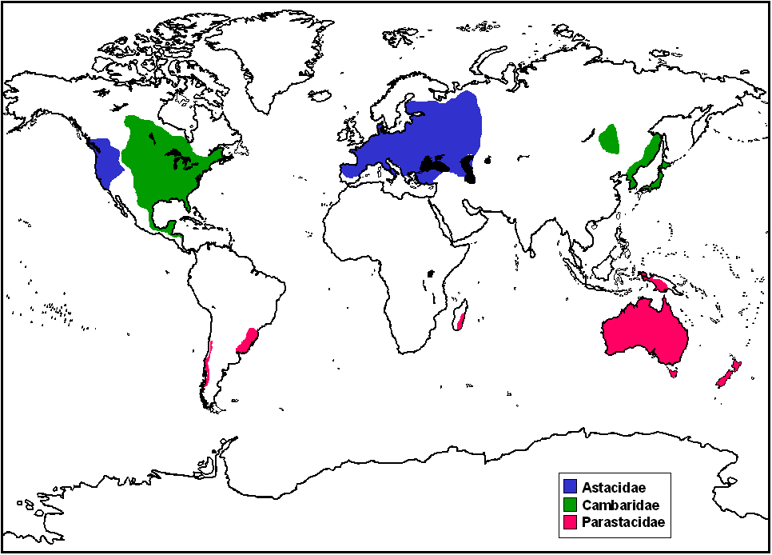
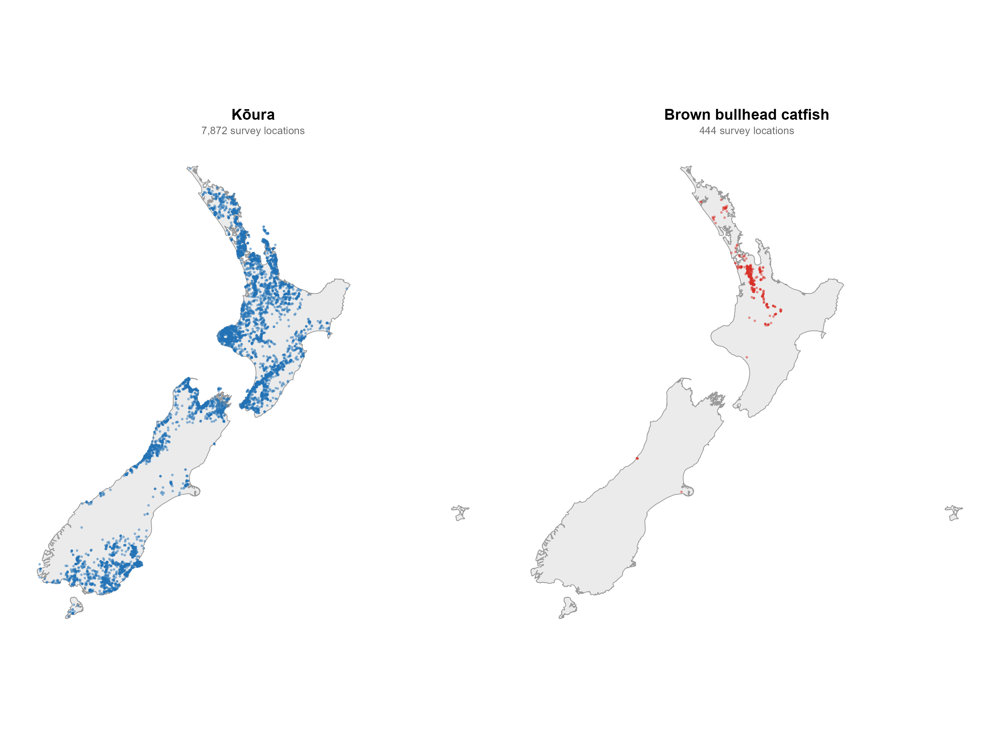
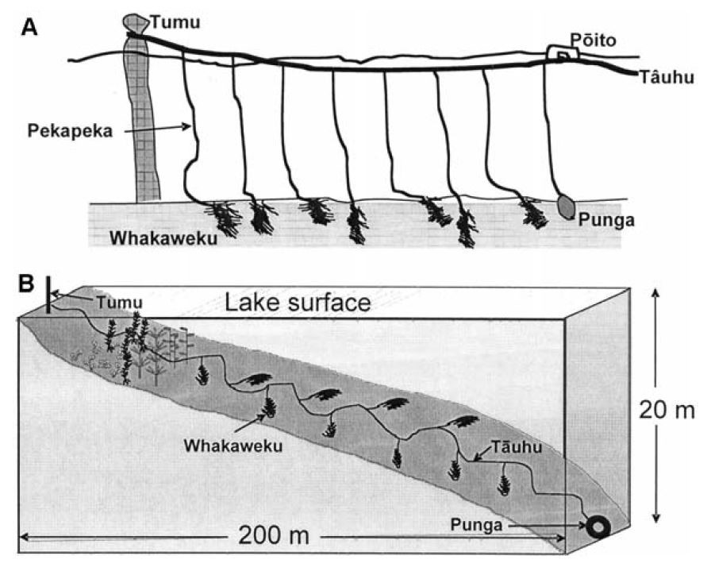
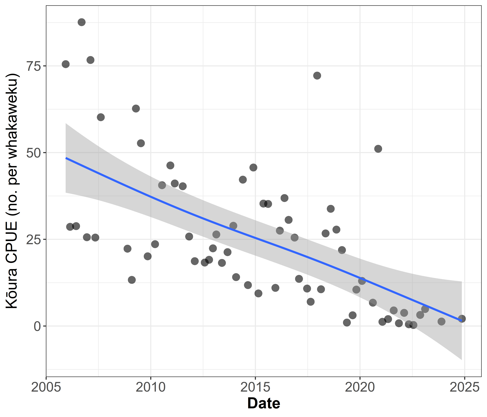
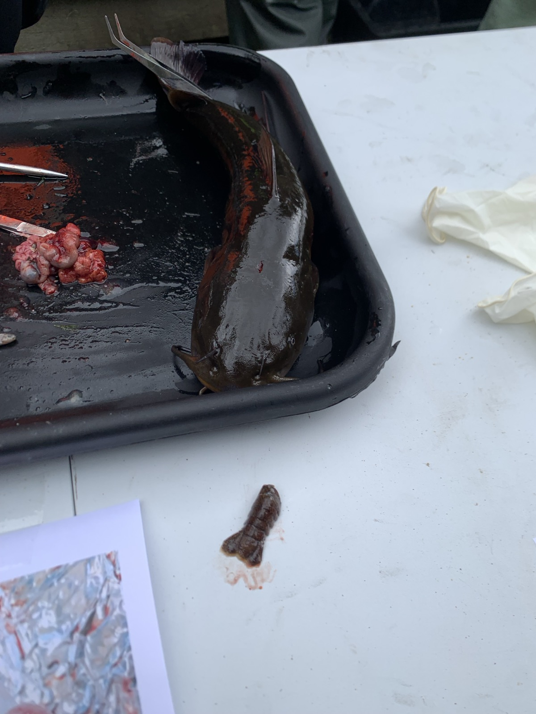
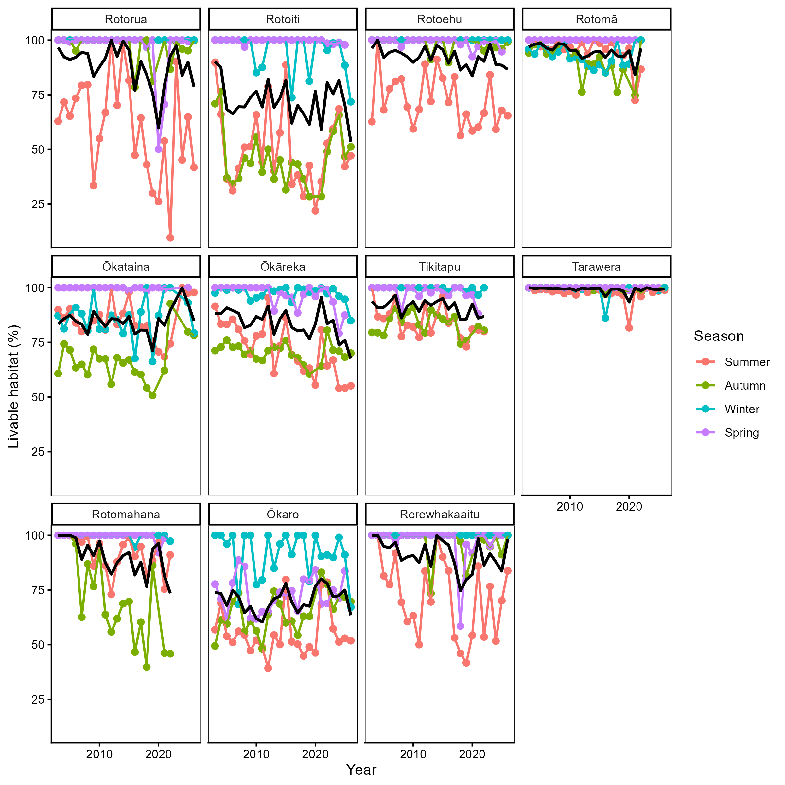
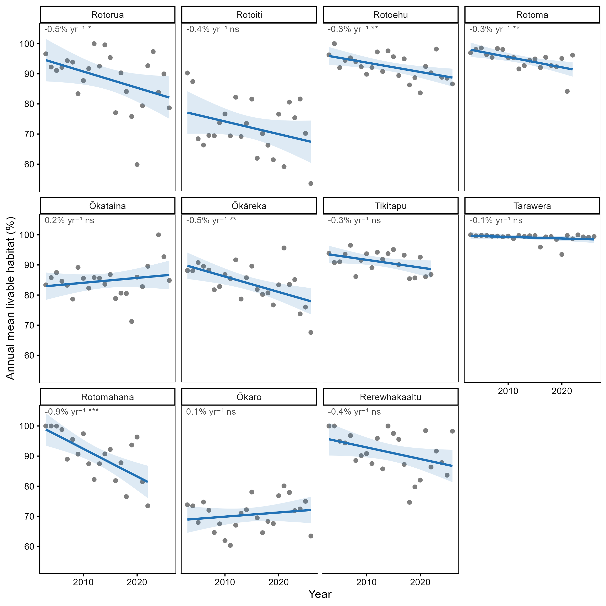
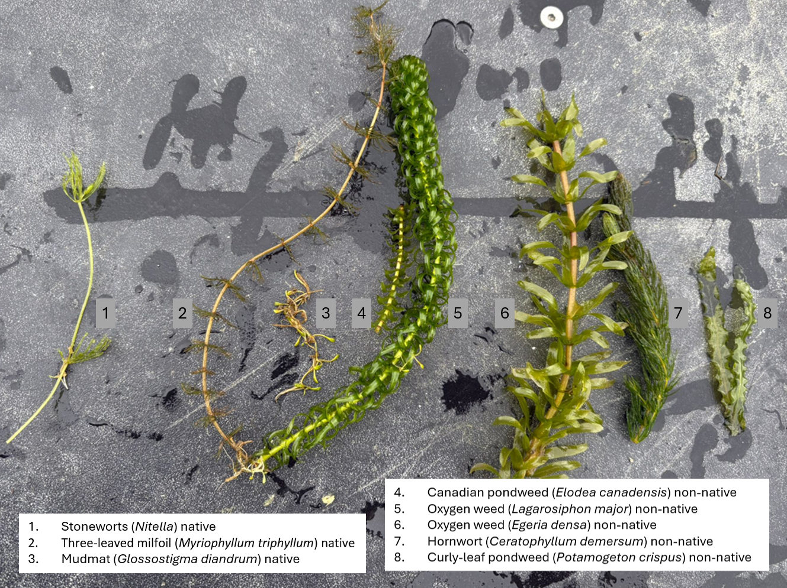

| Lake name | Surface area (km²) | Perimeter length (km) | Catchment area (km²) | Mean depth (m) | Maximum depth (m) | Elevation (m) | Mixing regime | Trophic state |
|---|---|---|---|---|---|---|---|---|
| Rotorua | 81.0 | 45 | 508.0 | 11.0 | 45.0 | 280 | Polymictic | Eutrophic |
| Rotoiti | 34.0 | 61 | 123.7 | 31.5 | 124.0 | 279 | Monomictic | Mesotrophic |
| Rotoehu | 8.0 | 40 | 49.2 | 8.0 | 13.5 | 295 | Polymictic | Eutrophic |
| Rotomā | 11.0 | 24 | 27.8 | 36.9 | 83.0 | 316 | Monomictic | Oligotrophic |
| Ōkataina | 11.0 | 29 | 59.8 | 39.4 | 78.5 | 305 | Monomictic | Oligotrophic |
| Ōkāreka | 3.0 | 11 | 19.6 | 20.0 | 33.5 | 355 | Monomictic | Mesotrophic |
| Tikitapu | 1.0 | 5 | 6.2 | 18.0 | 27.5 | 355 | Monomictic | Oligotrophic |
| Rotokākahi | 4.0 | 16 | 18.7 | 17.5 | 32.0 | 395 | Monomictic | Mesotrophic |
| Tarawera | 41.0 | 48 | 143.1 | 50.0 | 87.5 | 305 | Monomictic | Mesotrophic |
| Rotomahana | 9.0 | 27 | 83.3 | 60.0 | 125.0 | 340 | Monomictic | Mesotrophic |
| Ōkaro | 0.3 | 2 | 3.9 | 12.5 | 18.0 | 280 | Monomictic | Super-trophic |
| Rerewhakaaitu | 5.0 | 25 | 37.0 | 7.0 | 15.8 | NA | Polymictic | Mesotrophic |
4 General Introduction
4.1 Global freshwater ecosystem decline
Ecosystems worldwide are increasingly impacted by drivers of global change, with freshwater environments amongst the most degraded (Harrison et al. 2018). Freshwater ecosystems like rivers, streams, and lakes experience pervasive influences from land-use activities, introduced species, and climate change (Dudgeon et al. 2006). This degradation is particularly concerning given that freshwater systems disproportionately support biodiversity and ecosystem services relative to their global area. In lakes, the littoral zone is characterised by its exposure to sunlight, which enables photosynthesis in plants and algae, making it one of the most productive and biodiverse areas in lakes (Vadeboncoeur et al. 2011; Geist and Hawkins 2016; Porst et al. 2019). In the shallow regions of this zone, emergent vegetation flourishes, creating essential nurseries for numerous species (Meerhoff and De Los Ángeles González-Sagrario 2021). This vegetation significantly contributes to the energy and nutrient cycles within lake food webs. Unfortunately, lake shorelines are often heavily impacted by human activities such as hardening, the introduction of invasive species, and pollution (Vadeboncoeur et al. 2002; Strayer and Findlay 2010). Despite their importance, the effects of eutrophication and predation by non-native species in the littoral zone remain relatively understudied (Vander Zanden and Vadeboncoeur 2020). Reversing this degradation requires targeted interventions, though these are often complex and resource-intensive (Palmer et al. 2005), a challenge that has driven recent global commitments to ecosystem restoration.
4.2 Ecosystem and habitat restoration
The UN declared 2020-2030 the Decade for Ecosystem Restoration, with the intention of halting the degradation of ecosystems around the world (UN. General Assembly 2019; Gann et al. 2019; Cooke et al. 2022), as habitat degradation and loss remain key drivers of regional population extinction (Heinrichs et al. 2016). Ecosystem restoration aims to recover an entire ecosystem including its structure, function and dynamics, often, focussing on enhancing resilience to future stressors. Habitat restoration is a more targeted component of this broader goal, focusing on enhancing the quality or availability of habitat for a specific species or community, rather than an entire ecosystem. Approaches to habitat restoration vary widely depending on the system and species involved, but commonly include actions such as replanting native vegetation, removing barriers like dams, or adding structure to a habitat that has become structurally simplified or degraded (Banks-Leite et al. 2020; Loch et al. 2020). Adding structure is one of the more direct and widely applied forms of habitat restoration, since many species depend on physical complexity in their environment for shelter, feeding or reproduction (Geist and Hawkins 2016). In marine systems, this principle is most visibly applied through artificial reefs, structures placed on the seafloor to rebuild the complexity lost from degraded or removed natural reef habitat, supporting biodiversity recovery and fisheries productivity (Frehse et al. 2025). While artificial reefs are most often associated with marine environments, the same principle, that adding physical structure to a degraded habitat can restore the complexity and shelter availability, extends to freshwater systems as well (Geist and Hawkins 2016). In freshwater environments, this principle has been applied through the addition of rock, woody debris, or other natural substrates to streams and lakes that have lost structural complexity through historic modification, sedimentation, or substrate removal (Smokorowski and Pratt 2007; Roni et al. 2008). These additions have been used to support a range of freshwater taxa, including fish and invertebrates, by recreating the kind of structurally complex habitats that naturally support shelter, feeding and reproduction (Santos et al. 2011; McLean et al. 2015; Zhu et al. 2021). However, not all added structures achieve their intended benefit, poorly designed or inappropriate materials, such as plastic habitat structures, can fail to replicate natural habitat function and risk becoming a form of littering rather than restoration (Baine 2001; Cooke et al. 2023), underscoring the importance of careful design when structures are used as a restoration tool. Within freshwater systems, structural restoration is particularly relevant for taxa that depend on physical complexity for shelter, including freshwater crayfish, a group of significant ecological and conservation importance globally.
4.3 Freshwater crayfish: ecology and global decline
Freshwater crayfish are decapod crustaceans that form an important component of benthic macroinvertebrate communities in a wide range of freshwater ecosystems. They belong to the infraorder Astacidea, which is divided into two superfamilies: Astacoidea, restricted to the Northern Hemisphere, and Parastacoidea, restricted to the Southern Hemisphere (Crandall and De Grave 2017). The Astacoidea contains three families, Astacidae (western Eurasia and western North America), Cambaridae (eastern North America), and Cambaroididae (eastern Asia), while the Parastacoidea contains a single family, Parastacidae, with 15 genera distributed across Australia, New Zealand, New Guinea, South America, and Madagascar (Figure fig-crayfish-distribution) (Crandall and De Grave 2017). Crayfish have a segmented exoskeleton with chelipeds (pincers) for hunting and protection. They are omnivorous, functioning as scavengers, predators, and prey within freshwater food webs (Momot 1995; Reynolds et al. 2013). Through burrowing, bioturbation, sediment reworking, macrophyte consumption, and the processing of organic matter, crayfish exert disproportionate effects on freshwater ecosystems (Nyström et al. 1996; Statzner et al. 2003; Creed and Reed 2004), making them important ecosystem engineers and, in some systems, keystone species (Crandall and Buhay 2008; Jones et al. 2016). Despite their significant role, 32 % of crayfish species worldwide are threatened with extinction (Richman et al. 2015) due to numerous threats, including habitat degradation, pollution, invasive species, and overexploitation. Invasive species, including non-native fish and crayfish, prey on native species, compete for habitat, and spread diseases (Danilović et al. 2022). For example, in Europe native crayfish such as Astacus astacus, Austropotamobius pallipes, and A. torrentium are threatened by the crayfish plague pathogen (Aphanomyces astaci, an oomycete), which is carried asymptomatically by many North American crayfish species (Holdich et al. 2009). Therefore, conservation of native crayfish therefore requires understanding not only the threats they face but also the habitats they depend on, a challenge particularly acute for endemic species in geographically isolated systems such as those of Aotearoa New Zealand.

4.4 Kōura: Aotearoa’s native freshwater crayfish
Aotearoa New Zealand’s (hereafter Aotearoa) native biota is disproportionately made up of endemic species because of its island biogeography and isolated location (Wallis and Trewick 2009). The two endemic species of freshwater crayfish found in Aotearoa are of the genus Paranephrops. These freshwater crayfish are also known by their common Māori name of kōura, although some iwi (Māori tribal groups) use other names including kēwai, kēkēwai, and koeke. The two species are the northern kōura (Paranephrops planifrons White 1842) and the southern kōura (P. zealandicus White 1847). The northern kōura can be found all over the North Island and on the west side of the Southern Alps on the South Island (Figure fig-nz-distribution-maps). The southern kōura can be found on the eastern and southern part of the South Island and on Stewart Island.

4.4.1 Biology, ecology, and habitat use
Kōura are recognised as ecologically important and have been described as keystone species in some systems (Collier et al. 1997) and inhabit both streams and lakes. They tend to avoid areas with low dissolved oxygen (DO < 5 mg/L) (Broughton et al. 2017) but have been observed in streams with a pH as low as 4.1 and calcium concentrations of 0.9 mg/L (Olsson et al. 2006). Kōura are sensitive to light greater than 150-205 lux and stay therefore in deeper parts of lakes or use shelters in shallower areas (Devcich 1979). They occur across a range of substrates but prefer complex habitats, such as coarse gravel or rocky substrates, which provide shelter (Jowett et al. 2008; Kusabs et al. 2015b). In streams, their highest abundance was recorded on substrates with an average length of 10 cm (Olsson 2008). Kōura are omnivorous scavengers and consume a wide range of food resources including invertebrates (aquatic snails, chironomids, and mayflies) and detritus (Parkyn et al. 2001). During daylight hours, kōura are most vulnerable as prey for birds or other predators. Therefore, they will hide in shelters or in deeper parts of lakes during the day and move to shallower places during the night (Devcich 1979). When natural substrates providing hiding places are rare, kōura can excavate tunnels or burrows to provide cover. This behaviour is only possible if the substrate is suitable like clay or pumice sand, such as in Lake Tikitapu where tunnelling behaviour has been observed. Kōura have direct development: females carry eggs and then newly hatched juveniles beneath the abdomen for approximately three weeks before release, typically at depths of less than 10 m in lakes (Parkyn and Kusabs 2007). Juveniles mature in two to three years depending on water temperature (Devcich 1979; Parkyn 2000).
4.4.2 Cultural significance and population decline
Kōura continue to be an important food source for Māori and are considered a taonga (treasured) species (Parkyn and Kusabs 2007; Kusabs and Quinn 2009). Māori harvest kōura just like other kai (food) in specific periods of the year according to Maramataka (the Māori lunar calendar) (Henare 2008). For kōura, this period is from beginning of kōanga (spring) until halfway through ngahuru (autumn). Kōura are traditionally harvested using baited traps, handpicking, or the tau kōura which uses several whakaweku (fern bundles) attached to a tāuhu by pekapeka (Figure fig-tau-koura) (Parkyn and Kusabs 2007; Kusabs and Quinn 2009). In the Rotorua Te Arawa Lakes (a group of twelve volcanic lakes in the central North Island, see Study system below), kōura fisheries held significant cultural, economic, and nutritional importance. Historically, kōura were not only a vital food source but also served as a medium for trade and barter among the Te Arawa iwi and hapū. The tau kōura is still used today, but mostly for routine monitoring of kōura abundance in lakes (Kusabs and Quinn 2009; Kusabs et al. 2018). Kōura monitoring from 2005 to 2025 revealed declines of 76% and 91% in kōura catch-per-unit-effort in Lakes Rotorua and Rotoiti respectively (Figure fig-koura-decline). This is likely the result of the introduction of invasive predatory species like the brown bullhead catfish (Ameiurus nebulosus) (Kusabs et al. 2026).


4.5 Brown bullhead catfish: a novel predator in Aotearoa lakes
The brown bullhead catfish (Ameiurus nebulosus Lesueur 1819, hereafter catfish) is native to North America but has been introduced worldwide for aquaculture and as a game fish. In Aotearoa, 140 individuals were introduced in 1877 to Lake St John (Lake Waiatarua) in the Auckland region — reportedly by mistake, as the intended species was channel catfish (Ictalurus punctatus) (Barnes 1996). Although Lake St John has since been drained, catfish persisted and have spread throughout the upper North Island via accidental and deliberate releases (Figure fig-nz-distribution-maps). Lake Taupō was first invaded in 1985 following an illegal release (Barnes 1996). In the Rotorua Te Arawa Lakes, a dead catfish was found at Okawa Bay in Lake Rotoiti in 2009 (Blair and Hicks 2009) and sightings followed in 2014, but surveys failed to detect catfish until 2016, when multiple individuals were found at the western end of Lake Rotoiti, including Te Weta Bay where catfish were recovered during weed harvesting operations (Francis 2019). Catfish subsequently spread to Lake Rotorua in 2018 via the Ōhau Channel. Since 2016, routine monitoring and active control fishing have been carried out to reduce their impact (Grayling 2020). Aotearoa lacks native Siluriformes, making catfish a novel predation threat to which native species may lack adequate behavioural or sensory adaptations (Sih et al. 2010; Carthey and Banks 2014).
Catfish are physiologically tolerant of a wide range of conditions, including elevated temperatures and low dissolved oxygen (Scott and Crossman 1973), allowing them to occupy habitats that exclude many native species (Lee et al. 2025). They are omnivorous benthic feeders, with individuals reaching 200-455 mm in length and living up to eight years (Barnes 1996). Their diet overlaps with, and partly consists of, native species leading to both competition and direct predation (Figure fig-catfish-dissection) (Scott and Crossman 1973; Dedual 2019). Catfish are known predators of kōura, and are held responsible for the recent decline in kōura abundance in Lakes Rotorua and Rotoiti (Figure fig-koura-decline) (Kusabs et al. 2026). Habitat use varies seasonally: in lakes, catfish occupy depths down to approximately 17 m (Dedual 2002) and shift between weedy and rocky habitats depending on the season, primarily rocky habitats in winter when macrophytes die back, and both habitat types during autumn and spring (Barnes 1996; Barnes and Hicks 2003). Spawning occurs in nests excavated in mud or sand, typically in shallow areas near rocks or submerged tree trunks for protection (Scott and Crossman 1973). Nests are roughly the size of the female, who may carry between 2,000 and 13,000 eggs depending on body size (Scott and Crossman 1973).

4.6 Compounding threats to kōura habitat
In addition to predation by catfish, kōura face multiple interacting stressors that progressively restrict the habitat available to them, both spatially within lakes and across the year (Kusabs et al. 2015a; Lee et al. 2025). Understanding these compounding pressures requires knowledge of how kōura use lake habitat naturally and how each stressor narrows the available range.
Kōura are naturally associated with complex rocky habitats (Jowett et al. 2008; Kusabs et al. 2015b) or in deeper parts of the lake that provide refuge from visual predators during daylight hours. At night, kōura migrate vertically into the productive littoral zone to forage (Devcich 1979). The use of both shallow and deep habitats means that, for kōura to thrive, both must remain accessible and habitable. In stratified lakes during summer, thermal stratification creates anoxic conditions below the thermocline (dissolved oxygen <5 mg L⁻¹), displacing kōura from their daytime deep refuge into the shallow littoral zone (Kusabs et al. 2026). This forced upward movement places kōura directly in the depth range where catfish predation pressure is greatest as catfish rarely occur below approximately 17 m (Dedual 2002). The result is a seasonal compression of available habitat, where suitable depths shrink precisely where predation risk is highest. The importance of an oxygenated deep refuge is illustrated by Lake Taupō (maximum depth 186 m), where catfish and kōura co-exist because deep waters remain oxygenated below the thermocline year-round, providing continuous suitable habitat for kōura (Verburg and Albert 2019; Kusabs et al. 2026). In Lake Rotoiti, the deep refuge becomes anoxic and unavailable for kōura (Kusabs et al. 2026).
The shallow refuge available to kōura is also getting smaller. Dense beds of invasive macrophytes obstruct kōura movement through the littoral zone and reduce access to foraging habitat (Kusabs and Quinn 2009). When these macrophyte beds collapse, the subsequent decomposition further intensifies oxygen depletion in deeper waters (Vincent et al. 1984; Hamilton et al. 2005). The shallow zone is therefore both structurally altered and contributes to the loss of deep refuge. The cumulative effect of these stressors can be visualised by estimating the proportion of each lake’s water column that remains “livable” meaning sufficiently oxygenated and within thermal tolerance for kōura. Across eleven of the Rotorua Te Arawa Lakes, livable habitat varies strongly with season, with sharp summer declines in eutrophic and shallow lakes such as Rotorua, Rotoiti, Ōkaro, and Rotomahana, while deeper oligotrophic lakes such as Rotomā, Tarawera, and Tikitapu remain relatively stable year-round (Figure fig-livable-habitat-summary). Over the last 20 years several lakes show statistically significant declines in annual mean livable habitat, with Rotorua and Ōkāreka declining -0.5% yr⁻¹ (Figure fig-livable-habitat-trends).
Climate change is expected to intensify all of these pressures. Stronger and longer thermal stratification will expand and prolong anoxic conditions below the thermocline (Woolway et al. 2021), while warming surface waters are projected to expand the range of suitable catfish habitat in Aotearoa (Lee et al. 2025). The compression of suitable kōura habitat documented here is therefore likely to accelerate, reinforcing the need to understand which habitats kōura prefer and whether structural restoration can build resilience in kōura populations.


4.7 Study system: the Rotorua Te Arawa Lakes
This research was conducted in the Rotorua Te Arawa Lakes, a group of twelve volcanic lakes in the central North Island of Aotearoa (Bay of Plenty region; Table tbl-bop-lake-overview). The lakes were formed by rhyolitic volcanic activity over the past ~230,000 years and continue to experience volcanic influence, most recently trough the 1886 eruption of Mount Tarawera, which deposited basalt scoria and the distinctive Rotomāhana Mud across the surrounding catchments (Cole et al. 2014). The lakes vary considerably in size (0.3-81 km²) and maximum depth (13.5-125 m), and span a gradient of mixing regimes and trophic states from oligotrophic (e.g. Tarawera, Rotomā) to supertrophic (Ōkaro; Table tbl-bop-lake-overview). This diversity makes the Te Arawa Lakes a particularly informative system for studying how kōura respond to differing combinations of habitat structure, water quality, and predator presence.
The lake beds are owned by the Te Arawa Lakes Trust (TALT), with the exception of Lake Rotokākahi, which remains under the guardianship of Tuhourangi and Ngāti Tumatawera iwi. TALT, in collaboration with Te Komiti Whakahaere, oversees the harvest of ngā taonga in the Te Arawa Lakes under a fisheries management plan (Te Arawa Lakes Trust 2015), reflecting the deep cultural and ecological significance of the lakes to Te Arawa iwi and hapū.
Each lake supports a mix of native and introduced species. Next to kōura and catfish discussed above, native taxa include the freshwater mussle kākahi (Echyridella menziesii), kōaro (Galaxias brevipinnis), bullies toitoi (Gobiomorphus cotidianus), and common smelt (Retropinna retropinna). Introduced species include brown and rainbow trout (Salmo trutta, Oncorhynchus mykiss) and goldfish morihana (Carassius auratus). The lakes also support a mix of native macrophytes and several invasive species that have transformed the littoral zone in many lakes (Figure fig-rotoiti-weeds). Current lake management focussus on improving waterquality dan controlling invasive species, including alum (aluminium sulphate) dosing in Lakes Rotorua and Ōkaro to reduce to reduce phosphorus loading, mechanical and chemical control of invasive macrophytes, and the community-led catfish elimination programme known as the “Catfish Killas”.

4.8 Knowledge gaps and thesis aims
The previous sections established that kōura populations in the Rotorua Te Arawa Lakes are declining, that this decline is driven by interacting pressures from invasive predation, eutrophication, thermal stratification, and macrophyte expansion, and that the suitable habitat for kōura is both seasonally compressed and progressively shrinking (Kusabs et al. 2026). Although the broad drivers of decline are inreasingly well understood, several critical gpas remain in our ability to design effective interventions. First, while catfish are probably the main reason for kōura declines, the effect catfish have on kōura behaviour leading to non-consumative effects in comparison with native predators has not been quantified. We expected that kōura will show stronger antipredator responses to the novel catfish than to native eels, consistent with generalised fear response (Sih et al. 2023). Second, the natural habitats that kōura prefer have been described in streams and deeper parts of lakes but what shoreline habitats features kōura prefer was still unknown. We expected that kōura would be primeraly found on shorelines providing physical refuge as found for stream habitats (Jowett et al. 2008). Third, although habitat enhancement structures have been applied in freshwater systems globally to support fish and invertebrates (Smokorowski and Pratt 2007; Santos et al. 2011), very little studies have tested which combinations of material and structural configuration best support crayfish specifically. We expected that structurally complex structures providing various size crevices would be preferred by widest range of kōura. Finally, no previous studies of structure deployment to enhance kōura habitats had been executed in lakes. Therefore we deployed stone piles in Lake Rotoiti and expected that kōura populations at the stone piles will increase as by providing more refuge habitat more kōura would be able to hide from predators. This thesis addresses each of these gaps in turn through four research chapters, building from behavioural mechanisms in controlled conditions, through natural habitat use, to structure design, and finally to field deployment.
4.9 Research questions and thesis structure
This thesis aimed to determine and develop the best ways to restore and build resilience in the Rotorua Te Arawa Lakes kōura populations. The findings of this thesis are reported in the following four research chapters, followed by a general conclusion (Table tbl-research-questions).
| RQ | Chapter | Research question |
|---|---|---|
| 1 | 2 — Native vs. Novel Threats | How do native and non-native predators differentially influence antipredator behaviour and refuge use in kōura? |
| 2 | 3 — Where do Kōura Live | Which natural shoreline features do kōura prefer? |
| 3 | 4 — Structure over Material | Does shelter structure or material composition drive kōura refuge selection? |
| 4 | 5 — Stone Piles Rotoiti | Can habitat enhancement structures provide effective habitat for kōura in Lake Rotoiti? |
Before the deployment of any structures we first wanted to better understand the response of kōura when exposed to native and novel predators. Therefore in Chapter 2, kōura were exposed to native eels and to novel catfish in an aquarium study where refuge use was analysed. In Chapter 3, the natural preferred shoreline habitat for kōura was investigated by monitoring 60 sites over five lakes. From this we were able to better understand what habitat features are important for kōura and this monitoring gave better understanding of habitats that would benefit from the deployment of structures. In the next chapter, Chapter 4, it was time to design the most preferred structure. Kōura are known to use various materials and compositions, so for this study we tested in mesocosm experiments different configurations of wood and stone structures for the preferences of kōura. When the preferred and optimal structure was determined it was time to deploy and test it in the lake, bringing us to Chapter 5, where we tested the deployed of five stone pile structures along the shoreline in Lake Rotoiti and monitored for 18 months the development and colonisation of kōura. Finally, in the General Conclusion, an overview of the findings and their wider implications will be discussed in a way that habitat restoration can be beneficial in building resilience in many degraded ecosystems.
Baine M (2001) Artificial reefs: A review of their design, application, management and performance. Ocean & Coastal Management 44:241–259. https://doi.org/10.1016/s0964-5691(01)00048-5
Banks-Leite C, Ewers RM, Folkard-Tapp H, Fraser A (2020) Countering the effects of habitat loss, fragmentation, and degradation through habitat restoration. One Earth 3:672–676. https://doi.org/10.1016/j.oneear.2020.11.016
Barnes GE (1996) The biology and general ecology of the brown bullhead catfish (Ameiurus nebulosus) in Lake Taupo. Master of Science thesis, University of Waikato
Barnes GE, Hicks BJ (2003) Brown bullhead catfish (Ameiurus nebulosus) in Lake Taupo. In: Managing invasive freshwater fish in New Zealand: Proceedings of a workshop hosted by Department of Conservation, 10-12 may 2001, Hamilton. Department of Conservation
Blair JM, Hicks BJ (2009) An investigation to determine origin: Age and otolith chemistry of a brown bullhead catfish (ameiurus nebulosus) found at Okawa Bay, Lake Rotoiti. Centre for Biodiversity; Ecology Research, University of Waikato, Hamilton, New Zealand
Broughton RJ, Marsden ID, Hill JV, Glover CN (2017) Behavioural, physiological and biochemical responses to aquatic hypoxia in the freshwater crayfish, Paranephrops zealandicus. Comparative Biochemistry and Physiology Part A: Molecular & Integrative Physiology 212:72–80. https://doi.org/10.1016/j.cbpa.2017.07.013
Carthey AJR, Banks PB (2014) Naïveté in novel ecological interactions: Lessons from theory and experimental evidence. Biological Reviews 89:932–949. https://doi.org/10.1111/brv.12087
Cole JW, Deering CD, Burt RM, et al (2014) Okataina Volcanic Centre, Taupo Volcanic Zone, New Zealand: A review of volcanism and synchronous pluton development in an active, dominantly silicic caldera system. Earth-Science Reviews 128:1–17. https://doi.org/10.1016/j.earscirev.2013.10.008
Collier KJ, Parkyn SM, Rabeni CF (1997) Koura: A keystone species. Water and Atmosphere 5:18–20
Cooke SJ, Frempong-Manso A, Piczak ML, et al (2022) A freshwater perspective on the United Nations decade for ecosystem restoration. Conservation Science and Practice 4:e12787. https://doi.org/10.1111/csp2.12787
Cooke SJ, Piczak ML, Vermaire JC, Kirkwood AE (2023) On the troubling use of plastic “habitat” structures for fish in freshwater ecosystems – or – when restoration is just littering. FACETS 8:1–19. https://doi.org/10.1139/facets-2022-0210
Crandall KA, Buhay JE (2008) Global diversity of crayfish (Astacidae, Cambaridae, and Parastacidae — Decapoda) in freshwater. Hydrobiologia 595:295–301. https://doi.org/10.1007/s10750-007-9120-3
Crandall KA, De Grave S (2017) An updated classification of the freshwater crayfishes (Decapoda: Astacidea) of the world, with a complete species list. Journal of Crustacean Biology 37:615–653. https://doi.org/10.1093/jcbiol/rux070
Creed RP, Reed JM (2004) Ecosystem engineering by crayfish in a headwater stream community. Journal of the North American Benthological Society 23:224–236. https://doi.org/10.1899/0887-3593(2004)023<0224:EEBCIA>2.0.CO;2
Danilović M, Maguire I, Füreder L (2022) Overlooked keystone species in conservation plans of fluvial ecosystems in Southeast Europe: A review of native freshwater crayfish species. Knowledge & Management of Aquatic Ecosystems 423:21. https://doi.org/10.1051/kmae/2022016
Dedual M (2019) Summary of the impacts and control methods of Brown Bullhead catfish (Ameiurus nebulosus Lesueur 1815) in New Zealand and overseas. Bay of Plenty Regional Council
Dedual M (2002) Vertical distribution and movements of brown bullhead (Ameiurus nebulosus Lesueur 1819) in Motuoapa Bay, southern Lake Taupo, New Zealand. Hydrobiologia 483:129–135. https://doi.org/10.1007/978-94-017-0771-8_15
Devcich AA (1979) An ecological study of Paranephrops planifrons White (Decapoda : Parastacidae) in Lake Rotoiti, North Island. PhD thesis, University of Waikato
Dudgeon D, Arthington AH, Gessner MO, et al (2006) Freshwater biodiversity: Importance, threats, status and conservation challenges. Biological Reviews 81:163–182. https://doi.org/10.1017/s1464793105006950
Fetzner JW (2019) Crayfish Taxon Browser :: Infraorder Page
Francis LB (2019) Evaluating the effects of invasive brown bullhead catfish (Ameiurus nebulosus) on kōura (freshwater crayfish, Paranephrops planifrons) in Lake Rotoiti. Master’s thesis, University of Waikato
Frehse F de A, Derviche P, Pereira FW, et al (2025) Artificial aquatic habitats: A systematic literature review and new perspectives. Hydrobiologia 852:1997–2012. https://doi.org/10.1007/s10750-024-05589-0
Gann GD, McDonald T, Walder B, et al (2019) International principles and standards for the practice of ecological restoration. Second edition. Restoration Ecology 27: https://doi.org/10.1111/rec.13035
Geist J, Hawkins SJ (2016) Habitat recovery and restoration in aquatic ecosystems: Current progress and future challenges. Aquatic Conservation: Marine and Freshwater Ecosystems 26:942–962. https://doi.org/10.1002/aqc.2702
Grayling S (2020) Bay of Plenty regional pest management plan 2011-2016 annual report for 2019/2020. Bay of Plenty Regional Council
Hamilton D, McBride C, Uraoka T (2005) Lake Rotoiti fieldwork and modelling to support considerations of Ohau channel diversion from Lake Rotoiti. NIWA & University of Waikato
Harrison I, Abell R, Darwall W, et al (2018) The freshwater biodiversity crisis. Science 362:1369. https://doi.org/10.1126/science.aav9242
Heinrichs JA, Bender DJ, Schumaker NH (2016) Habitat degradation and loss as key drivers of regional population extinction. Ecological Modelling 335:64–73. https://doi.org/10.1016/j.ecolmodel.2016.05.009
Henare M (2008) Te mahi kai — food production economics: Calendar of work. Te Ara — the Encyclopedia of New Zealand
Holdich DM, Reynolds JD, Souty-Grosset C, Sibley PJ (2009) A review of the ever increasing threat to European crayfish from non-indigenous crayfish species. Knowledge and Management of Aquatic Ecosystems 11. https://doi.org/10.1051/kmae/2009025
Jones EW, Jackson MC, Gray J (2016) Environmental drivers for population success: Population biology, population and community dynamics. In: Biology and ecology of crayfish. CRC Press, pp 261–296
Jowett IG, Parkyn SM, Richardson J (2008) Habitat characteristics of crayfish (Paranephrops planifrons) in New Zealand streams using generalised additive models (GAMs). Hydrobiologia 596:353–365. https://doi.org/10.1007/s10750-007-9108-z
Kusabs IA, Hicks BJ, Quinn JM, et al (2018) Evaluation of a traditional Māori harvesting method for sampling kōura (freshwater crayfish, paranephrops planifrons) and toi toi (bully, gobiomorphus spp.) populations in two New Zealand streams. New Zealand Journal of Marine and Freshwater Research 52:603–625. https://doi.org/10.1080/00288330.2018.1481437
Kusabs IA, Hicks BJ, Quinn JM, Hamilton DP (2015a) Sustainable management of freshwater crayfish (kōura, Paranephrops planifrons) in Te Arawa (Rotorua) lakes, North Island, New Zealand. Fisheries Research 168:35–46. https://doi.org/10.1016/j.fishres.2015.03.015
Kusabs IAK, Duggan IC, Bruere AC, et al (2026) Invasive catfish linked to the decline of freshwater crayfish in two Aotearoa New Zealand lakes. Biological Invasions 28: https://doi.org/10.1007/s10530-026-03852-0
Kusabs IA, Quinn JM (2009) Use of a traditional Māori harvesting method, the tau kōura, for monitoring kōura (freshwater crayfish, Paranephrops planifrons) in Lake Rotoiti, North Island, New Zealand. New Zealand Journal of Marine and Freshwater Research 43:713–722. https://doi.org/10.1080/00288330909510036
Kusabs IA, Quinn JM, Hamilton DP (2015b) Effects of benthic substrate, nutrient enrichment and predatory fish on freshwater crayfish (koura, Paranephrops planifrons) population characteristics in seven Te Arawa (Rotorua) lakes, North Island, New Zealand. Marine and Freshwater Research 66:631–643. https://doi.org/10.1071/mf14148
Land, Air, Water Aotearoa (LAWA) (2025) Lakes data for the Bay of Plenty region
Lee F, Kusabs IAK, Perry GLW, MacNeil C (2025) Identifying refugia from the synergistic threats of climate change and invasive species. Web Ecology 25:221–239. https://doi.org/10.5194/we-25-221-2025
Loch JMH, Walters LJ, Cook GS (2020) Recovering trophic structure through habitat restoration: A review. Food Webs 25:e00162. https://doi.org/10.1016/j.fooweb.2020.e00162
McLean M, Roseman EF, Pritt JJ, et al (2015) Artificial reefs and reef restoration in the Laurentian Great Lakes. Journal of Great Lakes Research 41:1–8. https://doi.org/10.1016/j.jglr.2014.11.021
Meerhoff M, De Los Ángeles González-Sagrario M (2021) Habitat complexity in shallow lakes and ponds: Importance, threats, and potential for restoration. Hydrobiologia. https://doi.org/10.1007/s10750-021-04771-y
Momot WT (1995) Redefining the role of crayfish in aquatic ecosystems. Reviews in Fisheries Science 3:33–63. https://doi.org/10.1080/10641269509388566
Moore T, McBride C (2026) Aemetools: Tools to expand the Aquatic Ecosystem Model Ensemble Package
Nyström P, Brönmark C, Granéli W (1996) Patterns in benthic food webs: A role for omnivorous crayfish? Freshwater Biology 36:631–646. https://doi.org/10.1046/j.1365-2427.1996.d01-528.x
Olsson K (2008) Dynamics of omnivorous crayfish in freshwater ecosystems. PhD thesis, Department of Ecology, Limnology, Lund University
Olsson K, Stenroth P, Nyström P, et al (2006) Does natural acidity mediate interactions between introduced brown trout, native fish, crayfish and other invertebrates in West Coast New Zealand streams? Biological Conservation 130:255–267. https://doi.org/10.1016/j.biocon.2005.12.019
Palmer MA, Bernhardt ES, Allan JD, et al (2005) Standards for ecologically successful river restoration. Journal of Applied Ecology 42:208–217. https://doi.org/10.1111/j.1365-2664.2005.01004.x
Parkyn SM (2000) Effects of native forest and pastoral land use on the population dynamics and trophic role of the New Zealand freshwater crayfish paranephrops planifrons (Parastacidae). PhD thesis, University of Waikato
Parkyn SM, Collier KJ, Hicks BJ (2001) New Zealand stream crayfish: Functional omnivores but trophic predators? Freshwater Biology 46:641–652. https://doi.org/10.1046/j.1365-2427.2001.00702.x
Parkyn SM, Kusabs IA (2007) Taonga and mahinga kai species of the Te Arawa lakes: A review of current knowledge — kōura. NIWA, Hamilton, New Zealand
Porst G, Brauns M, Irvine K, et al (2019) Effects of shoreline alteration and habitat heterogeneity on macroinvertebrate community composition across European lakes. Ecological Indicators 98:285–296. https://doi.org/10.1016/j.ecolind.2018.10.062
Reynolds J, Souty-Grosset C, Alastair A (2013) Ecological roles of crayfish in freshwater and terrestrial habitats. Freshwater Crayfish 19:197–218. https://doi.org/2010.5869/fc.2013.v19-2.197
Richman NI, Böhm M, Adams SB, et al (2015) Multiple drivers of decline in the global status of freshwater crayfish (Decapoda: Astacidea). Philosophical Transactions of the Royal Society B: Biological Sciences 370:20140060. https://doi.org/10.1098/rstb.2014.0060
Roni P, Hanson K, Beechie T (2008) Global review of the physical and biological effectiveness of stream habitat rehabilitation techniques. North American Journal of Fisheries Management 28:856–890. https://doi.org/10.1577/M06-169.1
Santos LN, García-Berthou E, Agostinho AA, Latini JD (2011) Fish colonization of artificial reefs in a large Neotropical reservoir: Material type and successional changes. Ecological Applications 21:251–262. https://doi.org/10.1890/09-1283.1
Scott WB, Crossman EJ (1973) Freshwater fishes of Canada. Fisheries Research Board of Canada, Ottawa, Canada
Sih A, Bolnick DI, Luttbeg B, et al (2010) Predator-prey naïveté, antipredator behavior, and the ecology of predator invasions. Oikos 119:610–621. https://doi.org/10.1111/j.1600-0706.2009.18039.x
Sih A, Chung HJ, Neylan I, et al (2023) Fear generalization and behavioral responses to multiple dangers. Trends in Ecology & Evolution 38:369–380. https://doi.org/10.1016/j.tree.2022.11.001
Smokorowski KE, Pratt TC (2007) Effect of a change in physical structure and cover on fish and fish habitat in freshwater ecosystems — a review and meta-analysis. Environmental Reviews 15:15–41. https://doi.org/10.1139/a06-007
Statzner B, Peltret O, Tomanova S (2003) Crayfish as geomorphic agents and ecosystem engineers: Effect of a biomass gradient on baseflow and flood-induced transport of gravel and sand in experimental streams. Freshwater Biology 48:147–163. https://doi.org/10.1046/j.1365-2427.2003.00984.x
Stoffels R (2024) New Zealand Freshwater Fish Database (extended)
Strayer DL, Findlay SEG (2010) Ecology of freshwater shore zones. Aquatic Sciences 72:127–163. https://doi.org/10.1007/s00027-010-0128-9
Te Arawa Lakes Trust (2015) Mahere whakahaere Te Arawa lakes fisheries management plan. Te Arawa Lakes Trust, Rotorua, New Zealand
UN. General Assembly (2019) United Nations Decade on Ecosystem Restoration (2021–2030): Resolution adopted by the General Assembly
Vadeboncoeur Y, McIntyre PB, Vander Zanden MJ (2011) Borders of biodiversity: Life at the edge of the world’s large lakes. BioScience 61:526–537. https://doi.org/10.1525/bio.2011.61.7.7
Vadeboncoeur Y, Vander Zanden MJ, Lodge DM (2002) Putting the lake back together: Reintegrating benthic pathways into lake food web models. BioScience 52:44–54. https://doi.org/10.1641/0006-3568(2002)052[0044:PTLBTR]2.0.CO;2
Vander Zanden MJ, Vadeboncoeur Y (2020) Putting the lake back together 20 years later: What in the benthos have we learned about habitat linkages in lakes? Inland Waters 10:305–321. https://doi.org/10.1080/20442041.2020.1712953
Verburg P, Albert A (2019) Lake Taupo long-term monitoring programme 2017-2018. National Institute of Water & Atmospheric Research Ltd, Hamilton
Vincent WF, Gibbs MM, Dryden SJ (1984) Accelerated eutrophication in a New Zealand lake: Lake Rotoiti, central North Island. New Zealand Journal of Marine and Freshwater Research 18:431–440. https://doi.org/10.1080/00288330.1984.9516064
Wallis GP, Trewick SA (2009) New Zealand phylogeography: Evolution on a small continent. Molecular Ecology 18:3548–3580. https://doi.org/10.1111/j.1365-294X.2009.04294.x
Woolway RI, Sharma S, Weyhenmeyer GA, et al (2021) Phenological shifts in lake stratification under climate change. Nature Communications 12: https://doi.org/10.1038/s41467-021-22657-4
Zhu H, Liu X, Cheng S, Wang J (2021) Effects of artificial reefs on phytoplankton community structure in Baiyangdian Lake, China. Water 13:1802. https://doi.org/10.3390/w13131802